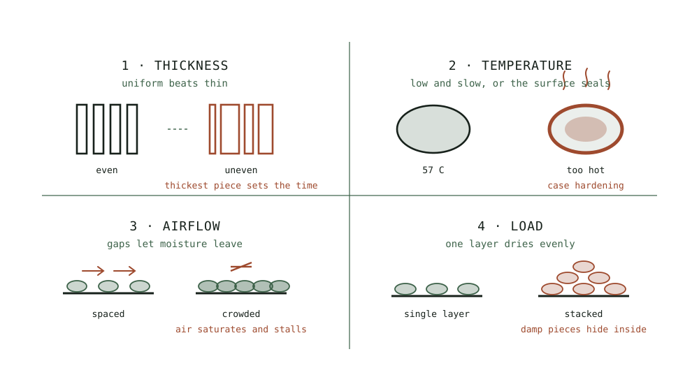

Guide
Rehydrating What You Have Dried
Dried food you never bring back becomes a cupboard of jars nobody opens. Here is how to use it, and when not to bother rehydrating at all.
As an Amazon Associate this site earns from qualifying purchases. Links to products may be affiliate links. This costs you nothing extra and does not change what gets recommended. Nothing here is medical advice.
The most common failure in home drying is not a mouldy batch. It is a cupboard of well made jars that nobody opens, because nobody is quite sure what to do with them.
Rehydration is the skill that closes that loop, and the most useful thing to know about it is how often you can skip it entirely. The drying hub covers how the food got there.

The rule that saves the most time
Most dried vegetables need no rehydration at all.
Anything going into a dish with liquid and cooking time rehydrates in the pot. Soups, stews, braises, curries, sauces, risotto, and slow cooker meals all provide both. Add the dried vegetable at the start along with the liquid and it will be indistinguishable from fresh by the time the dish is done.
This is the single most useful fact in this hub, and it is why dried vegetables get used while dried fruit sits in a jar being admired.
Rehydrate separately only when the dish does not provide liquid and time, or when you want the vegetable to keep a distinct texture rather than dissolve into the background.
When you do need to rehydrate
Cold water, slowly. Cover with cold water and refrigerate for four hours or overnight. This is the gentlest method and preserves the most texture. Use it for anything you want to eat as a vegetable in its own right.
Hot water, quickly. Cover with boiling water and leave fifteen to thirty minutes. Faster and coarser. Good for mushrooms, and good when you have not planned ahead.
Steaming. Ten to fifteen minutes over simmering water. Adds moisture without leaching flavour into a liquid you then have to use. Useful for anything going into a dry dish.
In the cooking liquid. Covered above and the correct answer most of the time.
Cold water preserves more, hot water is faster, and the difference matters more for texture than for flavour.
Ratios and timing
Roughly one part dried to two parts water by volume, as a starting point.
Mushrooms take more, often three parts water, because they are extremely absorbent. Tomatoes take less. Leafy things take very little.
Add water gradually rather than drowning the food. You can always add more, and excess water dilutes whatever flavour came out.
| Food | Water | Time, cold | Time, boiling |
|---|---|---|---|
| Mushrooms | 3 parts | 2 hours | 15 to 20 min |
| Carrot | 2 parts | 4 hours | 20 to 30 min |
| Onion | 1 part | 30 min | 10 min |
| Peppers | 2 parts | 1 hour | 15 min |
| Tomato | 1 to 2 parts | 1 hour | 15 min |
| Green beans | 2 parts | 4 hours | 25 min |
| Peas | 2 parts | 2 hours | 20 min |
Onion is the outlier and barely needs rehydrating. It softens in minutes and works dry in almost anything.
Always keep the soaking liquid
This is the point most often missed and the one that costs the most flavour.
Water pulls soluble compounds out of the dried food, which means the soaking liquid ends up carrying a meaningful share of what you were trying to preserve. Pouring it down the sink discards the best part of the exercise.
Use it as the liquid in the dish. Mushroom soaking liquid in particular is worth more than the mushrooms and turns an ordinary risotto or gravy into something noticeably better. Tomato soaking water goes into the sauce. Vegetable soaking water goes into the stock.
Strain it if grit is a concern, which it sometimes is with mushrooms. A fine sieve or a piece of muslin handles it.
If you genuinely cannot use it immediately, freeze it in an ice cube tray. It keeps for months and drops straight into the next pot.
What comes back and what does not
Rehydration restores water. It does not restore structure, and being clear about that prevents disappointment.
Comes back well. Onion, mushroom, pepper, tomato, carrot, peas, beans, sweetcorn, and most things destined for a cooked dish. These are indistinguishable from fresh once cooked.
Comes back acceptably. Courgette, aubergine, and squash return soft rather than firm. Fine in a stew, poor in a stir fry.
Comes back poorly. Anything you intended to eat raw and crisp. Dried cucumber and dried lettuce do not return in any useful form, which is why neither is worth drying in the first place.
Fruit. Rehydrates to something soft and pleasant rather than fresh. Dried apricots plumped in hot water or in a little juice are excellent in a tagine or a compote and will never be a fresh apricot again.
Herbs. Never rehydrated. They go into the dish dry and rehydrate in whatever moisture is present.
Powders. Not rehydrated so much as dissolved. Mushroom powder disappears into a liquid entirely, which is the point.
The general principle: if the fresh version was valued for crispness, drying was probably the wrong choice. If it was valued for flavour, drying works and rehydration completes it.
Cooking with dried food directly
Several uses skip rehydration completely and are worth knowing.
Dried onion and garlic go into rubs, spice mixes, bread dough, and anything with moisture. No preparation at all.
Dried tomato chopped into a dressing softens in the oil within an hour and takes on the flavour of whatever it sits in.
Dried mushroom blitzed to powder dissolves into stock, gravy, and mince.
Dried herbs always go in dry, and earlier in the cooking than fresh herbs, since they need heat and moisture to release their flavour.
Dried fruit in porridge, granola, and baking rehydrates from the surrounding moisture during cooking.
Dried vegetable powders stir into sauces, soups, and doughs for colour and savoury depth without adding any liquid, which is genuinely useful where extra moisture would be a problem.
The camping and travel case
Dried food is at its most useful where weight and refrigeration matter, and it is worth building a few meals around deliberately.
A bag of dried vegetables, a handful of dried mushroom, some herbs, and a stock cube becomes a proper meal with nothing but boiling water and twenty minutes. It weighs almost nothing and needs no cooling.
Pre-mix meals into individual bags at home rather than carrying separate jars. Add the grain or pasta to the same bag so the whole meal is one item.
Rehydrating in a sealed insulated container works well and saves fuel. Add boiling water, seal, and leave it for thirty minutes while you do something else.
This is the use case where home drying most clearly beats anything you can buy, because commercial equivalents are expensive and heavily salted.
Rehydrating in things other than water
Water is the default and frequently not the best choice, and using something else is the easiest upgrade available here.
Stock. The obvious substitution and it costs nothing if you are making a savoury dish anyway. Dried vegetables rehydrated in stock arrive already seasoned.
Wine or beer. Excellent for mushrooms destined for a sauce or a stew. Use a small quantity and top up with water, since the flavour concentrates as the food absorbs it.
Fruit juice. The right choice for dried fruit. Apple juice for apples and pears, orange juice for apricots, and the result is far better than water-plumped fruit in a compote or a tagine.
Tea. Dried fruit plumped in strong black tea is a traditional approach in baking, particularly for a fruit loaf, and it adds tannin and depth.
Warm milk or cream. For dried fruit going into a dessert. Slower and richer.
Oil, for tomatoes. Not rehydration exactly, since oil does not replace water, but chopped dried tomato left in oil for an hour softens considerably and takes on whatever the oil is flavoured with. Refrigerate anything stored this way rather than leaving it in a cupboard.
The rule is to rehydrate in something you would have added to the dish anyway. It costs no extra effort and the flavour that leaches out stays where you want it.
RUN THE NUMBERS
Illustrative figures based on typical dried produce.
| Approach | Effort | Texture retained | Flavour retained | Best for |
|---|---|---|---|---|
| Straight into the pot | None | Good | All of it | Soups, stews, sauces |
| Cold water, refrigerated | Plan ahead | Best | Good, keep the liquid | Vegetables as vegetables |
| Boiling water, 20 min | Low | Acceptable | Good, keep the liquid | Mushrooms, unplanned meals |
| Steaming | Moderate | Good | Best | Dry dishes |
| Not at all, as powder | None | Not applicable | All of it | Depth in anything liquid |
Dried food roughly triples to quadruples in volume when rehydrated, so a small quantity goes a long way. Half a cup of dried mixed vegetables is a generous portion for two once it has come back.
WHAT GOES WRONG
Tough carrot that never softens. Not blanched before drying. Blanching softens cell walls and makes rehydration possible, which is covered in the vegetable guide.
Flavourless results. Soaking liquid poured away. Use it as the cooking liquid, always.
Grit in the dish. Mushroom soaking liquid not strained. Pour it through a fine sieve.
Mushy vegetables. Rehydrated in boiling water and then cooked as well. Either rehydrate in the dish, or shorten the cooking after.
Bland dried fruit that stayed hard. Rehydrate in juice or a little wine rather than water, and give it longer.
Too much water in the finished dish. Rehydrated separately and then added with the soaking liquid on top of the recipe's own liquid. Account for it.
DO THIS NOW
- Put a handful of dried vegetables straight into the next soup or stew you make, with no preparation at all.
- Soak dried mushrooms in boiling water for twenty minutes and use the strained liquid as the stock rather than discarding it.
- Freeze any soaking liquid you cannot use immediately in an ice cube tray.
- Blitz a small jar of dried mushroom to powder and stir a spoonful into the next gravy.
Next
For the blanching step that determines whether vegetables rehydrate properly at all, see drying vegetables and the blanching question.
Mushrooms produce the most valuable soaking liquid of anything in this hub. Mushrooms and tomatoes covers drying both and the powders they make.